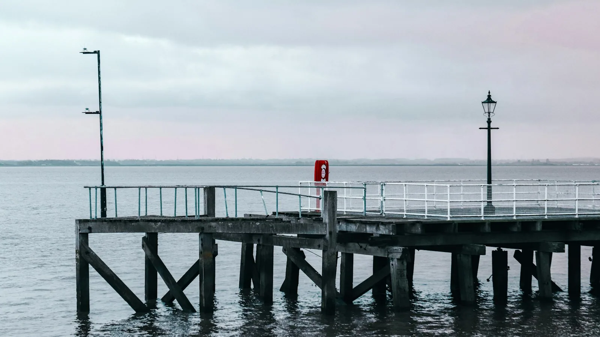
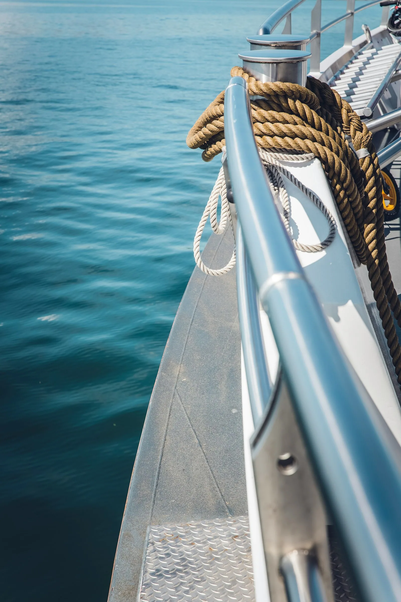
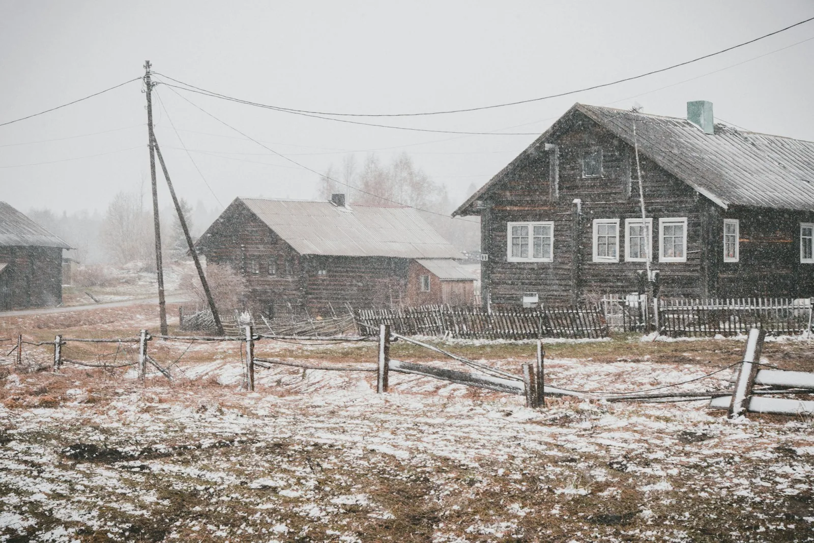
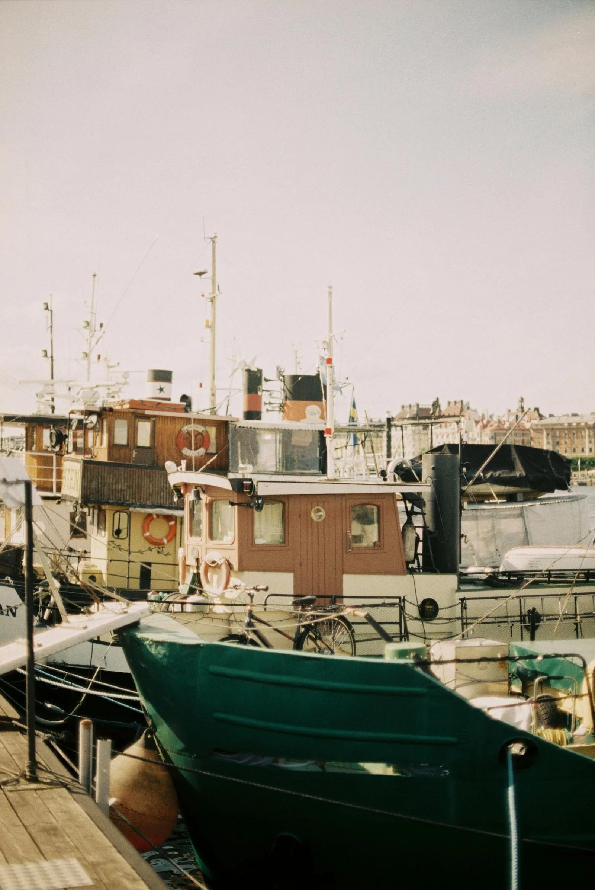
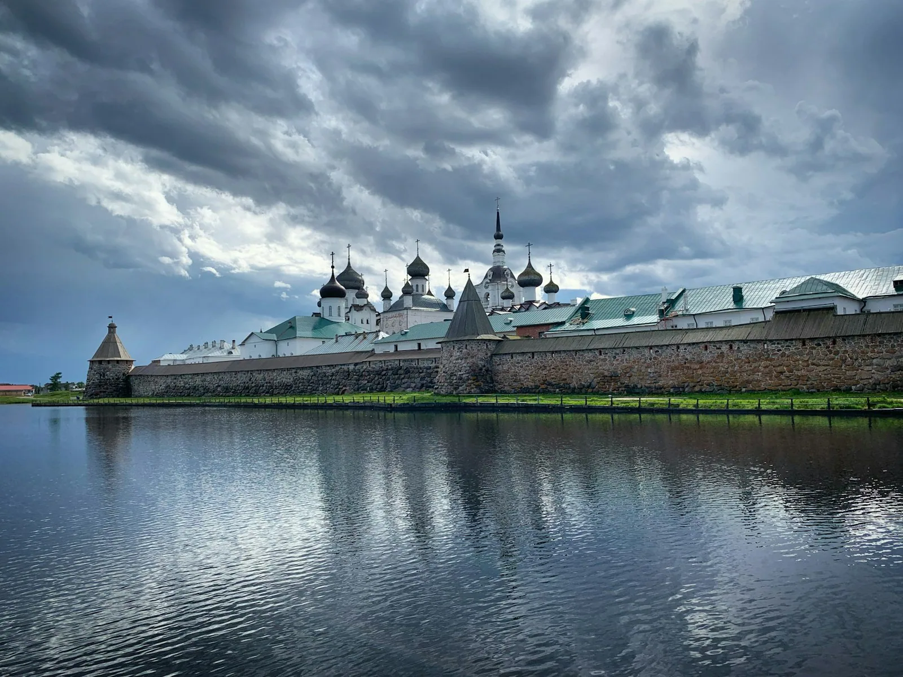

Статьи / Люди / Николай Петрович

На переправе под Макарьевом работает один человек. Он продаёт билеты, швартует паром, следит за погодой и помнит почти всех, кто переезжал реку хотя бы дважды.
Работа, которая осталась
Николай Петрович пришёл на переправу в девяносто седьмом, когда закрылся леспромхоз. Других мест в селе не было, а на пароме нужен был человек, который не боится ветра и умеет считать деньги.
Тогда паром ходил каждый час. В селе жило шестьсот человек, по утрам на том берегу стояла очередь из машин. Сейчас летом шесть рейсов в день, а зимой переправы нет совсем. Река встаёт, и село живёт само по себе до апреля.


Тетрадь с велосипедистами
Велосипедистов он записывает в отдельную тетрадь в клетку: дата, сколько человек, откуда едут. Первая запись сделана в 2014 году, и за весь тот сезон в ней всего три строчки.
Теперь каждое лето кто-нибудь спрашивает, где набрать воды и можно ли поставить палатку у причала. Можно, говорит он, но лучше выше по склону. Ночью от реки тянет холодом, а утром туман такой, что палатку не видно с воды.
«Велосипед везу бесплатно. Человек сам доехал, своими ногами. За что с него брать?»
Николай Петрович
Как он видит дорогу
Сам он ни разу не ездил дальше районного центра. Говорит, что и не нужно: дорога сама приезжает к нему на пароме. Он знает, на каком километре кончается асфальт, где после дождя не проехать и у кого в селе можно купить молоко.
Мотоциклистов он узнаёт по звуку раньше, чем видит. Велосипедистов узнаёт по тому, как они смотрят на воду: долго и молча, будто впервые.
молоко у бабы Нины, дом с синими ставнями


